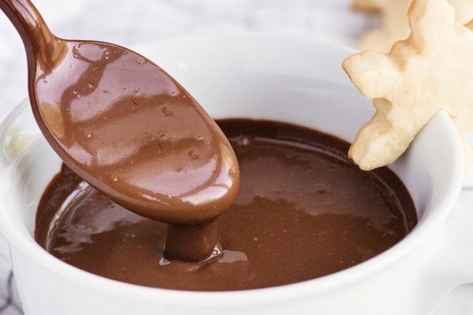

Italian Hot Chocolate

Italian Hot Chocolate
This Italian Thick Hot Chocolate Recipe is so creamy and delicious you don't even need to top it with any whipped cream or marshmallows. But if you do, I won't stop you. Enjoy!
Ingredients:
- 3.5 ounces Dark Chocolate (good quality and chopped into small pieces)
- 2 tablespoons sugar
- 2 1/2 tablespoons cocoa unsweetened
- 1 cup + 1 tablespoon milk (2% or whole milk/divided)
- 1 teaspoon corn starch
All necessary steps
- In a small bowl whisk until smooth, 1/4 cup milk and cornstarch set aside.
- Sift the cocoa into a medium bowl then add the sugar and whisk together, set aside.
- In a small/medium pot heat 3/4 cups + 1 tablespoon milk until boiling reduce heat to low, start whisking and add the milk/cornstarch mixture
- Add the cocoa mixture slowly while continually whisking until smooth add the chopped chocolate and whisk for approximately 3 minutes
- Serve immediately. Enjoy!
Back to main page